En typisk dag
Hos Krudt, Kram og Krea har vi en tryg og genkendelig hverdag med plads til både faste rutiner og spontane oplevelser.
Dagene kan variere afhængigt af vejret, børnenes behov og de aktiviteter, vi har planlagt.
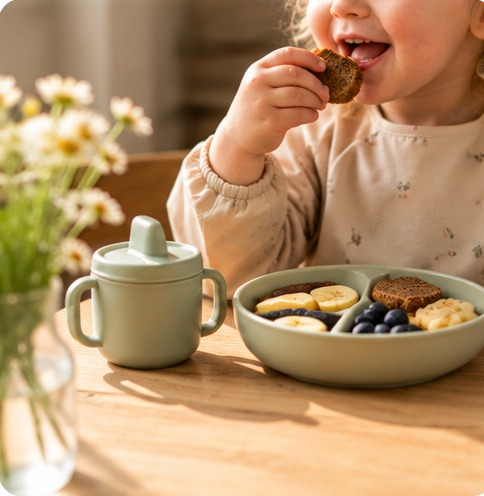
Godmorgen
Krudt, Kram og Krea åbner, og vi tager imod børnene. De børn, der kommer tidligt, får tilbudt morgenmad, og vi starter dagen i et roligt tempo.
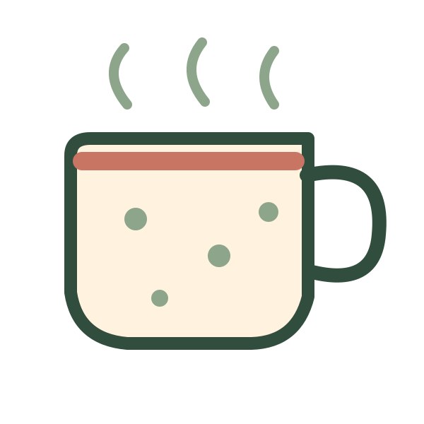
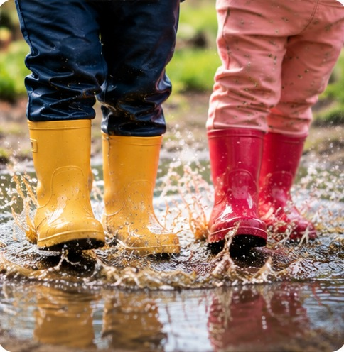
Formiddagsmad og aktiviteter
Vi spiser formiddagsmad og gør os klar til dagens aktiviteter. Herefter tager vi måske på tur, leger i haven, laver kreative aktiviteter eller hygger os indenfor.
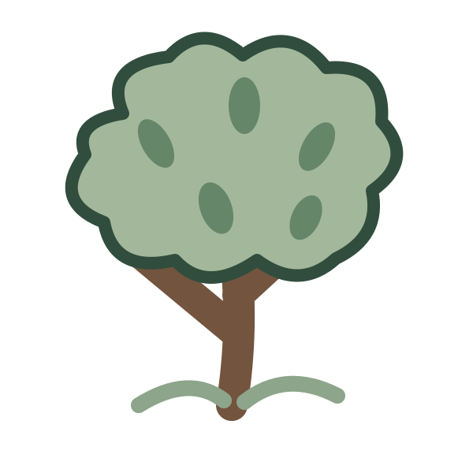
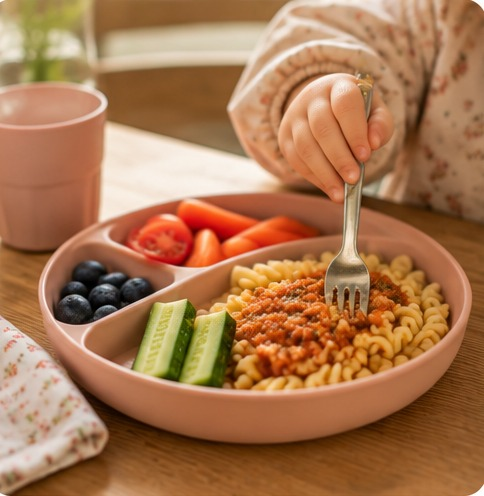
Frokost
Vi samles og spiser frokost sammen.
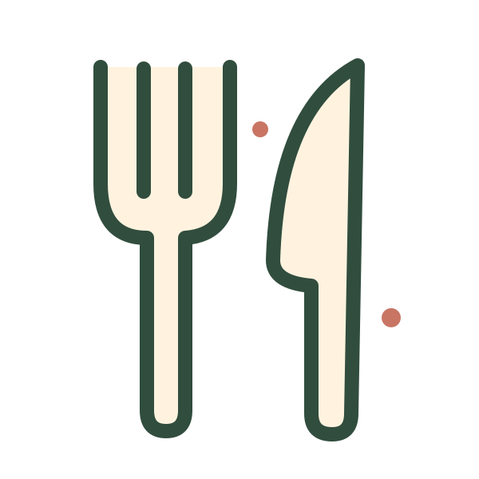
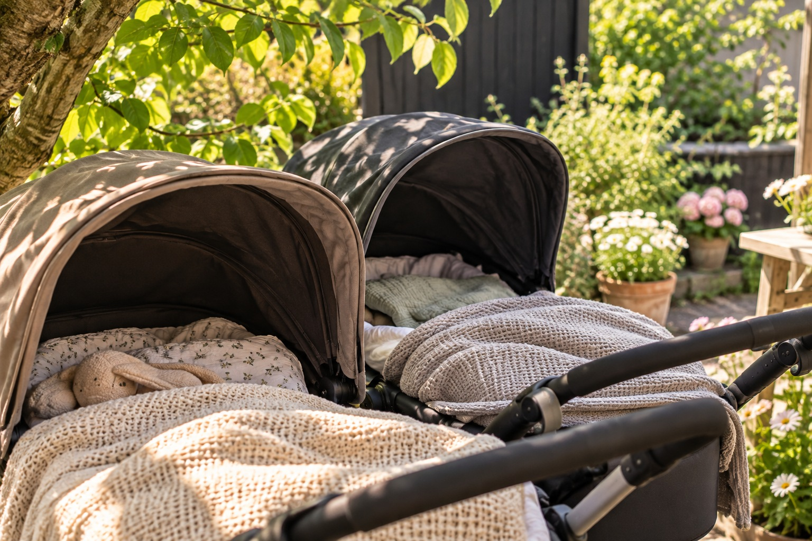
Middagslur
Efter frokost er det tid til en velfortjent lur. Børnene sover enten udenfor i barnevogn eller indenfor i telt, alt efter deres behov.
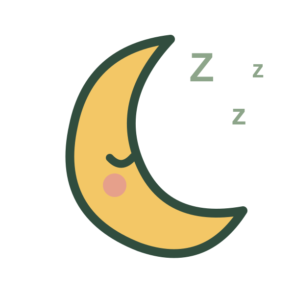
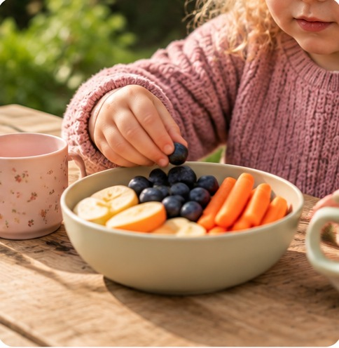
Eftermiddagsmad og leg
Når børnene er vågnet, spiser vi eftermiddagsmad. Derefter leger vi, laver kreative aktiviteter eller er ude i haven – alt efter vejret og børnenes energi.
(16.30)
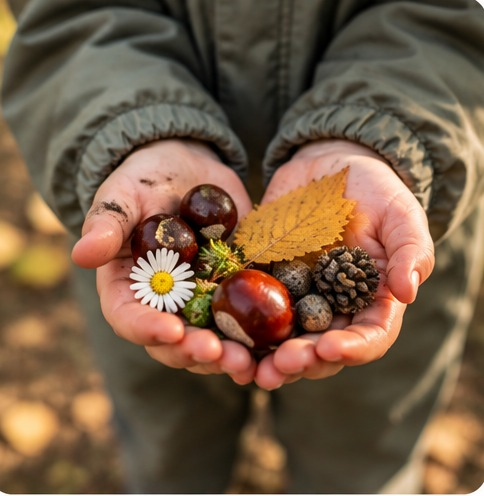
Tak for i dag
Vi leger og hygger, indtil børnene bliver hentet. Fredag lukker vi kl. 16.00.
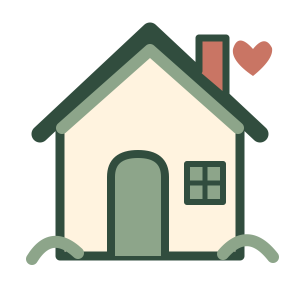
En hverdag med plads til det hele
Hos mig er der plads til både faste rutiner, spontane eventyr, beskidte fingre, kreative projekter og masser af krudt, kram og krea.
Kontakt mig, hvis I vil vide mere →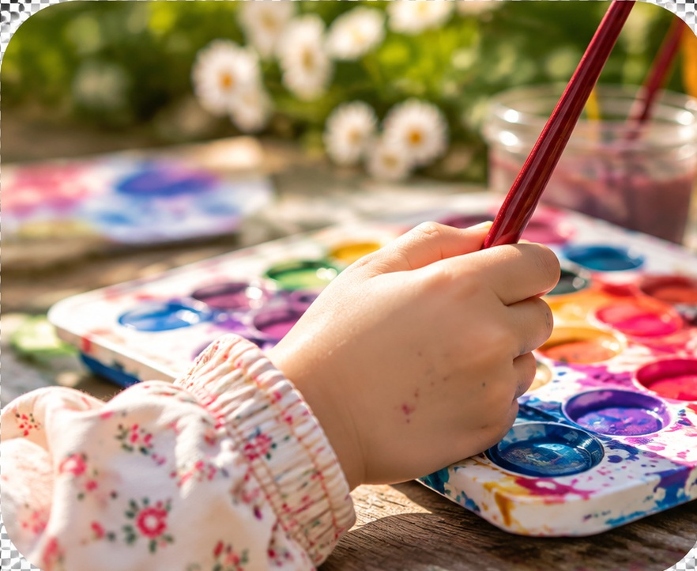
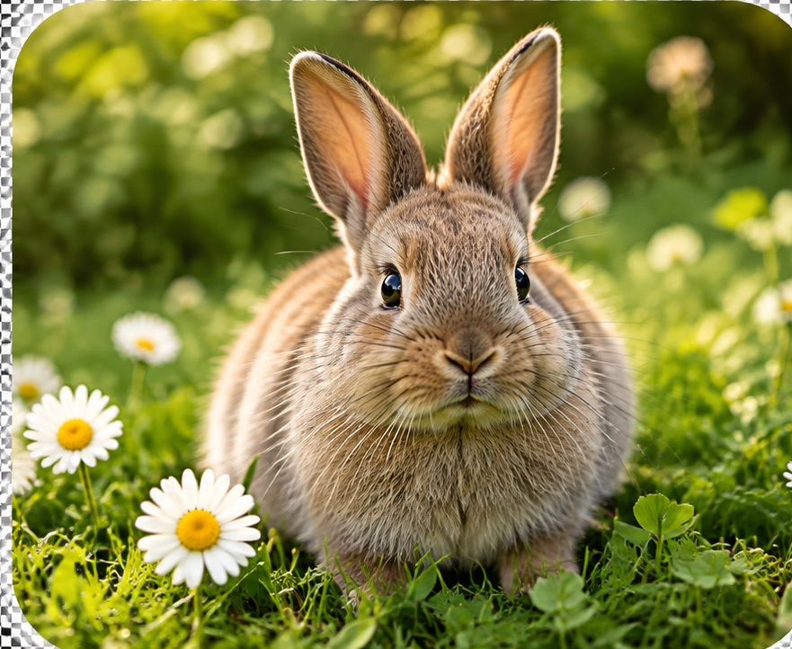